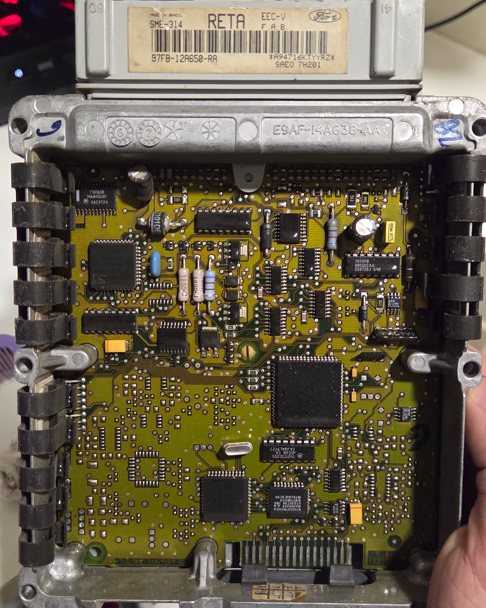
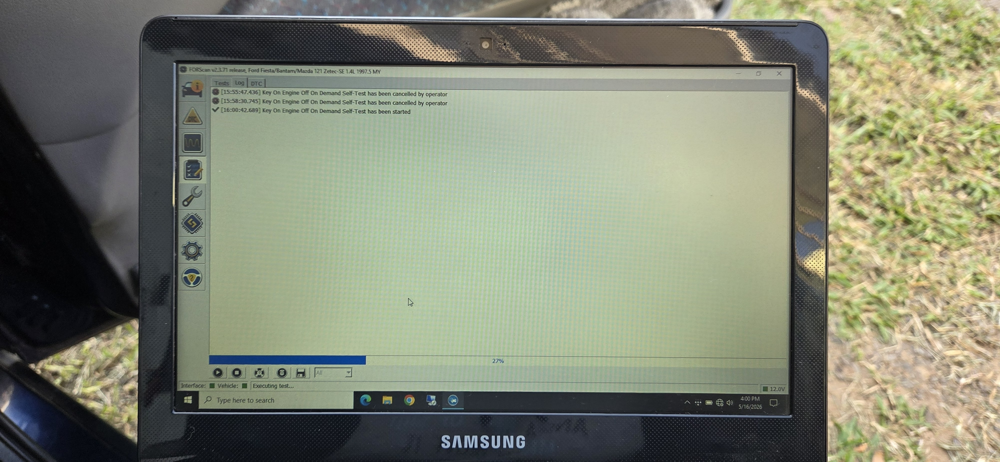

Upgrade de ECU Ford
Como um projeto de engenharia reversa de ECU que não deu certo se tornou, meses depois, a base para uma telemetria do motor em tempo real — e por tabela, um carro que anda melhor do que nunca.

O objetivo nunca foi performance
Antes de qualquer coisa, vale deixar claro o que motivou esse projeto inteiro — porque não é o que normalmente se espera de um trabalho com a ECU (Engine Control Unit, ou Unidade de Controle do Motor em português) de um carro. O objetivo nunca foi extrair mais potência ou torque. Era entender e capturar a telemetria de funcionamento do motor, com um fim bem específico: alimentar rotinas de monitoramento ativo e automação preditiva no Home Assistant do UltimateLab, capazes de disparar alertas em caso de anomalias antes que elas se tornassem problemas mecânicos reais.
A primeira tentativa de chegar a esses dados foi usar um Arduino junto de um módulo transceptor RS-485 para decodificar o protocolo proprietário DCL (Data Communication Link), usado pelos módulos de injeção EEC-IV da Ford até meados dos anos 90, e ler diretamente da ECU original do Escort.
O problema apareceu rápido: dentro da família de módulos EEC-IV, cada geração de ECU usada em diferentes modelos tinha seu próprio "dialeto" do protocolo. E a regra parecia ser inversa do que se esperava — quanto mais nova era a variante da ECU, mais obscura e mal documentada ela estava. Documentos internos da Ford, encontrados em repositórios no GitHub, ajudavam a montar uma base teórica sobre como cada estratégia funcionava, mas nunca chegavam a ser uma fonte assertiva o suficiente para decodificar com confiança o que estava sendo lido.
Mudança de rota: se não posso ler, vamos trocar!
Diante da falta de documentação confiável, o foco do projeto mudou: em vez de decodificar a EEC-IV, a pergunta virou "o que substitui essa ECU por completo?" — abrindo a porta para soluções de ECU programável, populares no meio de preparação automotiva.
Três opções entraram na mesa de avaliação:
Além de que as três opções compartilhavam os mesmos problemas de fundo: custo elevado e meses de carro parado para mapeamento e acertos. Como eu uso o carro diariamente, seria complicado ficar sem ele. Mas havia um problema mais fundamental para o que eu realmente queria: ECUs programáveis têm um controle bem mais simples sobre funções de conforto, como o atuador de marcha lenta — o que significaria perder refinamento no dia a dia de um carro de uso diário e possívelmente um aumento no consumo de combustível. Fora que nenhuma delas resolveria o objetivo original, que era obter telemetria robusta de um sistema com o comportamento previsível e maduro de uma ECU de fábrica, não de uma plataforma genérica que eu mesmo teria que mapear do zero.
A descoberta: alguém já tinha resolvido isso
Foi pesquisando alternativas que apareceu o caminho que de fato resolveria o problema sem as desvantagens das ECUs programáveis: substituir a EEC-IV por uma EEC-V — a geração seguinte da própria Ford, nativamente compatível com OBD2 (SAE J1850 PWM), obrigatório a partir de 1996 nos EUA, e ainda capaz de manter o refinamento original de fábrica em funções como a marcha lenta.
A pesquisa levou até a Mecânica Scadufax, em Sorocaba, onde o proprietário, Alexandre, já havia realizado esse mesmo swap no próprio carro.
O ouro da missão: uma Ford Courier que aprendeu a controlar um motor Zetec 1.8

A parte mais interessante dessa história não é só a peça em si, mas de onde ela veio. O Alexandre tem um Ford Fiesta MK4 que passou por um swap de motor para o Zetec-E 1.8 16V — o mesmo bloco usado no Escort — e que ele leva para track days no Autódromo de Interlagos. Para controlar esse motor, ele usa uma EEC-V originalmente projetada para a Ford Courier 1.4 16V Zetec-S.
A descoberta dele, e que se tornou o verdadeiro valor dessa busca: a EEC-V do Zetec-S 1.4 consegue gerenciar perfeitamente um bloco 1.8, sem nenhuma adaptação eletrônica adicional. O módulo que ele me vendeu era exatamente o mesmo que ele usava nesse Fiesta de track day — testado em pista, não apenas em teoria.
Muito além da engenharia reversa ou da troca de peça em si, a história por trás desse módulo específico — de uma Courier de fábrica, para um Fiesta de track day em Interlagos, e no fim, indo para o meu Escort — é o tipo de detalhe que só aparece quando se encontra a pessoa certa.
A instalação: 1.200 km de distância e um upgrade de hardware
O módulo já estava testado — mas a distância onde eu estava (em Santa Maria, no Rio Grande do Sul), até Sorocaba, é de quase 1.200 km de distância. Seria inviável levar o carro até lá, então a solução foi adquirir o módulo e fazer toda a instalação, em casa, sem apoio presencial de quem fez a configuração original.
O conhecimento acumulado durante toda a fase anterior — tentando ler a EEC-IV via protocolo DCL - foi exatamente o que permitiu entender fiação, pinagem e compatibilidade entre os dois sistemas o suficiente para conduzir essa instalação sozinho.
Em termos de hardware, essa troca também não deixou de ser também um upgrade silencioso: a EEC-IV original rodava em um processador Intel 8061 com 256KB de RAM, enquanto a EEC-V que assumiu o lugar dela usa um Intel 8065 com 2MB de RAM — praticamente oito vezes mais memória disponível para o controle do motor.
O objetivo alcançado: telemetria em tempo real
Com a EEC-V instalada e estável, o objetivo original do projeto finalmente foi alcançado. Hoje, a cadeia de telemetria funciona de ponta a ponta: um scanner OBD2 lê os dados da ECU e os envia para meu celular via aplicativo Torque Pro, que por sua vez os repassa para o Home Assistant no UltimateLab via rede 5G.
Os dados críticos do motor — temperatura, rotação, correções de mistura, entre outros — alimentam rotinas de monitoramento ativo, com alertas push instantâneos disparados em caso de qualquer anomalia. Esse é exatamente o sistema de automação preditiva que motivou todo o projeto desde a primeira tentativa, ainda na EEC-IV original.
Os ganhos que vieram de carona
E como dito no início deste artigo, indo na contramão do que normalmente se esperaria de um projeto envolvendo a injeção eletrônica de um carro, o objetivo aqui não era extrair desempenho — mas a troca trouxe por tabela uma série de melhorias reais de dirigibilidade, fruto do aprendizado adaptativo muito mais sofisticado da EEC-V em relação à EEC-IV original:
- O carro passou a funcionar muito melhor com a gasolina E30, graças à capacidade de aprendizado adaptativo da nova ECU;
- O controle térmico do motor ficou mais robusto: o acionamento do eletroventilador agora é feito pela própria ECU, mantendo o termointerruptor (o famoso cebolão) como redundância;
- O controle de marcha lenta ao acionar o compressor do ar-condicionado é muito mais rápido, assim como o desacoplamento da embreagem magnética ao pisar fundo no acelerador;
- O corte de giro subiu de 6.750 para 7.000 RPM, e o motor sobe a rotação de forma muito mais ágil, tornando a condução perceptivelmente mais esperta;
- Correções de marcha lenta causadas pela variação de pressão da direção hidráulica praticamente desapareceram.
Uma descoberta adicional, que o próprio Alexandre já havia constatado em seu Fiesta MK4: o aprendizado adaptativo da EEC-V é tão eficiente que o carro roda tranquilamente até com E85 (85% etanol, 15% gasolina) — bem além do que normalmente se esperaria de uma ECU de fábrica dessa geração.
O que ficou dessa jornada
Esse projeto não é uma história de sucesso linear, e é exatamente por isso que julgo interessante em compartilhar aqui. A tentativa original de decodificar a EEC-IV via protocolo DCL não funcionou como eu planejava — MAS também não foi tempo perdido. Na verdade, foi o que construiu o entendimento necessário sobre a arquitetura de injeção Ford o suficiente para avaliar alternativas com critério real, encontrar quem já tinha resolvido o mesmo problema, e executar a instalação final sozinho, a 1.200 km de distância de qualquer suporte presencial. No fim, o projeto entregou exatamente o que se propôs — telemetria de motor em tempo real — e trouxe, sem ter sido essa a meta, um carro muito mais agradável de dirigir.